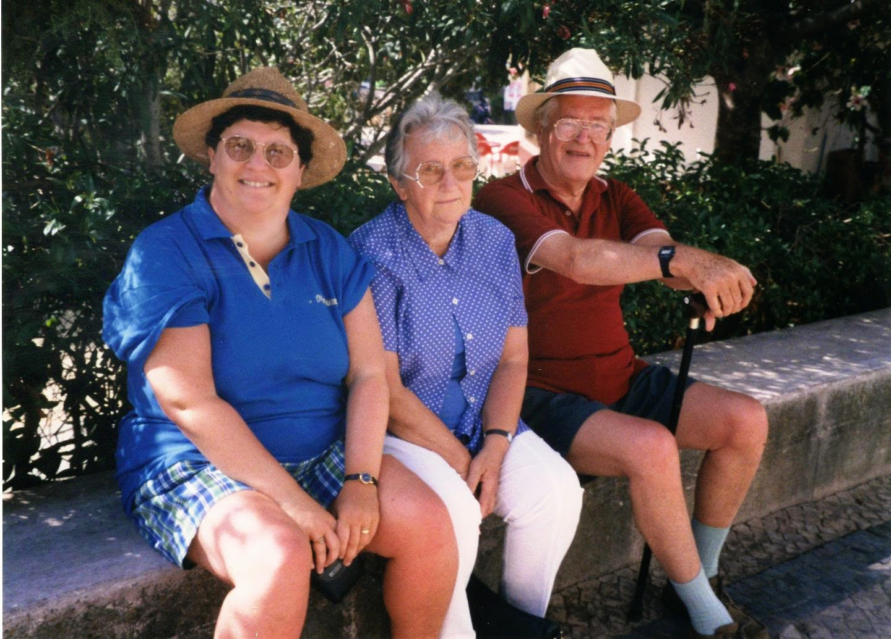

1997
Spring 1997
We were off to the Santa Isabel in Funchal, Madeira, to the usual corner room with glorious views out to sea. The Sanata Catarina Gardens were in full bloom and a joy to walk through. The Santa Maria sailing ship, a magnificent replica of Christopher Columbus's Flag ship, was in dock. We had our usual walks on the promenade and into town, by Funchal Town Hall, and down the Savoy Lido onto the little pier. We decided to hire a car to get out and about on the island, but ended up with a small Jeep. It was great fun getting Mum into the back. First stop was Ribeira Brava, where we had a coffee. We then headed north towards São Vicente, stopping off at a viewpoint en route. The waves were their usual selves on the north of the island in Porto Moniz. We also went up the Nun's Valley.
{kind=link}
Summer 1997
Summer saw me down in London, visiting Anne in Richmond. Elaine, William and Sam spent the day with us, and we went sightseeing in central London. We fed the ducks in St. James' Park.We made a trip to Abercanaid and made our way up to Weber's Pond. It was a lot smaller than everyone remembered. There was also another trip to the villa in Carvoiero with Mum, Dad and Jean. This time Anne came with us, including a trip to Portimao.